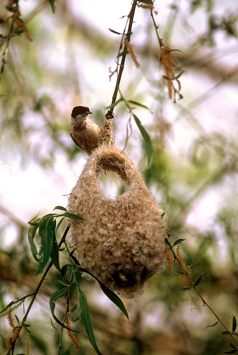

Fauna Deltei Dunării
Datorita conditiilor favorabile de viata create de varietatea habitatelor terestre si acvatice, Delta Dunarii este un adevarat adapost pentru peste 3.400 de specii de animale, vertebrate si nevertebrate, unele dintre ele fiind protejate de lege. Aici vin sa se adaposteasca pasari de pretutindeni, cum ar fi din toate colturile Europei, Asiei, Africii si Marii Mediterane.
Pasarile care traiesc aici sunt cunoscute drept monumente ale naturii care poposesc atat toamna cat si primavara in rezervatia biosferei Deltei Dunarii, in special rare dar si de prada. Aproape intreaga populatie de gaste cu gat rosu este gazduita in sezonul de iarna, alaturi de grupuri mari de lebede. In fauna ornitologica sunt diferentiate 5 tipuri principale: mediteranean, european, siberian, mongolic si chinez. Cel mediteranean cuprinde urmatoarele pasari: pelican, califar, ciocintors, piciorong, vultur plesuv, cormoran mic, starc, tiganus, cel european: vulturul codalb, vulturul pescar, pescarusul, randunele de mare, privigehetoarea si alte pasari cantatoare, cel siberian: lebada cantatoare, fluierarul, comuna, cocorul, cel mongolic: soimul dunarean, vulturul plesuv si cel chinez: lebada muta, egreta, rata mandarin. Pasarile protejate se pot clasifica in 2 grupe in functie de culoarea penajului: albe si policrome, printre care se numara urmatoarele specii rare: pelucanul, cormoranul, egreta, lopatarul, bufnita mare, vulturul codalb etc.
Nevertebratele detin conducerea ca numar de specii, pana in prezent fiind descrise 37 de specii noi pentru stiinta, un vierme, 5 specii de arahnide, o specie de peste si alte 30 de specii de insecte.
Fauna pisciola cuprinde specii de apa dulce, dar si specii marine si eurihaline. Cateva dintre speciile faimoase ale Deltei le reprezinta sturionii, populari pentru icrele lor negre supranumite caviar dupa care ravnesc majoritatea turistilor, stiuca, peste rapitor care-si pandeste pradaapoi o ataca filgerator, somnul, cel mai mare peste adapostit de apele dulci ale Romaniei, cantitatea maxima a acestuia fiind de 400 de kg.
In Delta se regaseste de asemenea si o fauna a amfibienilor si reptilelor, reprezentata de 10 specii de broaste si 2 de soparle de apa, iar reptilele au ca reprezentanti 12 specii de serpi, soparle si testudine.
Delta Dunarii ascunde de asemenea si mamifere, numarul si varietatea acestora fiind asigurate de zone mai inalte ocolite de ape in general. Aici ca specii principale intalnim vidra, nurca, bizamul, mistretul. Vidra este o specie strict protejata de legislatia internationala si diferite conventii, care recomanda cel mai intalt grad de aparare posibil, iar nurcile au ajuns pe cale de disparitie datorita mai multor factori, printre care se numara si distrugerea habitatelor naturale.
Delta Dunarii este un ascunzis de fauna piscicola, ornitologica si a mamiferelor care nu doar imbogatesc tinuturile si apele deltei, dar sunt de asemena si atractii pentru turisti prin diversitate si culorile pe care le insusesc, cat si pentru faptul ca este o rezervatie importanta a lumii. Cu alte cuvinte, este o minunatie a naturii pe care trebuie sa o ingrijim cu cat mai mult posibil. Avem una din cele mai mari si importante rezervatii din lume, motiv de mandrie pentru tara noastra, iar poluarea trebuie diminuata ca speciile pe cale de disparitie sa ramana aici si sa aibe conditii favorabile de viata in continuare.